전자산업기사 (2002-05-26 기출문제)
1과목: 전자회로
1. PNP 접합 트랜지스터를 사용한 증폭기에 있어서 베이스를 기준으로 한 컬렉터의 전위는 어떤 전위로 되는가?
- 부전위
- 영전위
- 정전위
- 동전위
(정답률: 49%)

2. 다음의 연산증폭기를 사용한 회로에서 출력 Vo의 식은?
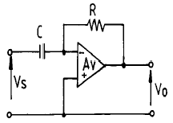
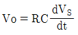


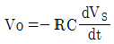
(정답률: 80%)
3. 10012 의 2진수를 10진수로 고치면?
- 310
- 910
- 1010
- 1210
(정답률: 90%)
4. 그림과 같은 비안정 Multivibrator회로에서 C1=C2=0.2㎌, Rc1=Rc=10㏀, RB1=RB2=100㏀일 때 반복주기는 약 몇 ㎳ 인가?
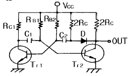
- 1.4
- 2.8
- 14
- 28
(정답률: 32%)
5. 2진수 1010을 그레이 코드(gray code)로 변환한 것은?
- 0001
- 0011
- 1000
- 1111
(정답률: 91%)
6. 그림의 회로 명칭은? (단, R1=R2=R3=R4이다.)
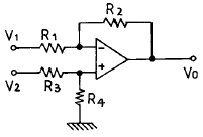
- 가산기
- 차동증폭기
- 부호변환기
- 이상기(移相器)
(정답률: 95%)
7. 푸시풀(push-pull) 증폭기의 설명으로 옳은 것은?
- B급이나 AB급으로 동작시킨다.
- 두 입력의 위상은 동상이어야 한다.
- 공급 전압에 리플이 포함되어 있으면 부하에 나타난다.
- 트랜지스터의 비선형 특성에서 오는 일그러짐이 증가한다.
(정답률: 77%)
8. 다음 회로에서 Barkhausen 의 발진 조건 βA=1이 되는 조건은?
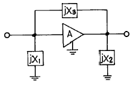
- X1＜0, X2＞0, X3＞0
- X1＞0, X2＜0, X3＜0
- X1＞0, X2＜0, X3＞0
- X1<0, X2<0, X3>0
(정답률: 75%)
9. 회로의 대역 폭(Band Width)을 결정하는 소자에 대한 올바른 문장은? (단, Tr의 표유용량 및 접합용량은 무시한다.)
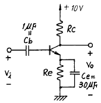
- Cb는 주로 저역 차단주파수 (Low cutoff frequency)를 결정한다.
- Ce는 주로 저역 차단주파수 (Low cutoff frequency)를 결정한다.
- Rc는 주로 고역 차단주파수 (High cutoff frequency)를 결정한다.
- Re는 주로 고역 차단주파수 (High cutoff frequency)를 결정한다.
(정답률: 40%)
10. 합성이득이 100인 증폭기를 만들려고 하는데 기본 증폭기의 이득 변화율은 15%정도로 예상된다. 이 궤환 증폭기의 이득 변화율을 0.5% 정도로 낮출려면 궤환율 β 는 약 얼마로 하면 좋은가?
- 0.0967
- 0.00797
- 0.00095
- 0.00967
(정답률: 52%)
11. 주파수 변조에서 사용되는 프리앰퍼시스(Preemphasis)에 대한 설명 중 옳지 않은 것은?
- 일반적으로 주파수 변조회로 앞단에 설치한다.
- 간단한 R, C 소자로서도 구성이 가능하다.
- 주파수 특성은 저역여파기의 특성과 비슷하다.
- 신호대 잡음비를 높이기 위하여 사용한다.
(정답률: 60%)
12. 불 대수의 법칙에 어긋나는 것은?
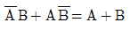
- A + AB = A
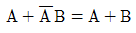
- (A + B)· (A + C) = A + B· C
(정답률: 39%)
13. 다중 회선을 구성할 때 시분할 방식으로 하려면 어떠한 변조 방식이 적절한가?
- AM
- FM
- 펄스 변조
- PM
(정답률: 56%)
14. 고주파 특성이 좋고 입력 임피던스가 작으며, 출력 임피던스가 큰 회로 방식은?
- cathode follower
- 컬렉터 접지
- 이미터 접지
- 베이스 접지
(정답률: 58%)
15. 다음 사용한 parameter중 트랜지스터의 물리적 구조와 직접적으로 관련된 소신호 parameter는?(오류 신고가 접수된 문제입니다. 반드시 정답과 해설을 확인하시기 바랍니다.)
- h-parameter
- y-parameter
- z-parameter
- Early의 등가회로의 parameter
(정답률: 45%)
16. 이미터 접지형 증폭기에서 베이스 접지 때의 전류증폭률 α가 0.9, ICO 가 0.1[㎃] 이고, IB는 0.5[㎃] 일 때, 컬렉터 전류 IC는 몇 [㎃]인가?
- 4.5
- 5.0
- 5.5
- 45
(정답률: 42%)
17. 그림과 같은 회로의 설명으로 옳은 것은?
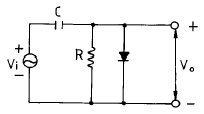
- 클리핑 회로이다.
- 클램프 회로이다.
- 진폭 제한 회로이다.
- 양단 클리핑 회로이다.
(정답률: 49%)
18. 논리식
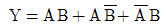
를 최소화 하면?- A+B
- AB
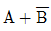
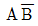
(정답률: 78%)
19. 그림과 같은 회로에서 RL에 2 [㎃] 전류를 흘려주려고 한다. RL 값은?
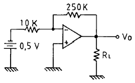
- 4 [㏀]
- 5.25[㏀]
- 6.25[㏀]
- 7.25[㏀]
(정답률: 76%)
20. 부궤환 증폭기의 특성이 아닌 것은?
- 이득의 증가
- 비직선 일그러짐의 감소
- 주파수 특성 개선
- 잡음의 감소
(정답률: 79%)
2과목: 전기자기학 및 회로이론
21. 기자력의 단위는?
- V
- Wb
- AT
- N
(정답률: 62%)
22. 압전기 진동자로 가장 많이 이용되는 재료는?
- 로셀염
- 실리콘
- 방해석
- 페라이트
(정답률: 53%)
23. 그림의 회로에서 저항 0.2[Ω]에 흐르는 전류는 몇 [A]인가?
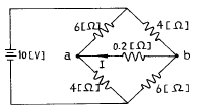
- 0.1
- 0.2
- 0.3
- 0.4
(정답률: 49%)
24. 그림과 같이 반지름 r[m]인 원의 임의의 2점 a, b (각θ) 사이에 전류 I가 흐른다. 원의 중심 0의 자계의 세기는 몇 A/m 인가?
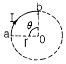
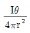
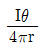
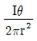
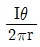
(정답률: 34%)
25. 그림과 같은 회로의 전달함수는?
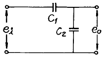
- C1+C2
- C2/C1
- C1/C1+C2
- C2/C1+C2
(정답률: 45%)
26. 용량이 3×10-6 F인 콘덴서를 220V의 전압으로 충전시킨 다면, 콘덴서에 축적되는 에너지는 몇 Ｊ 인가?
- 2.76×10-2
- 7.26×10-2
- 2.76×10-4
- 7.26×10-4
(정답률: 25%)
27. 어떤 4단자망의 입력 단자 1, 1'사이의 영상 임피던스 Z01과 출력 단자 2, 2'사이의 영상 임피던스 Z02가 같게 되려면 4단자 정수사이에 어떠한 관계가 있어야 하는가?
- A=D
- B=C
- AB=CD
- AD=BC
(정답률: 63%)
28. 공간 도체 중의 정상 전류밀도가 i , 전하밀도가 ρ일 때 키르히호프의 전류법칙과 같은 것은?
- i = 0
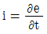
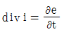
- div i = 0
(정답률: 73%)
29. 그림과 같은 정 K형 필터에 대한 기술 중 옳은 것은? (단, K는 공칭 임피던스이다.)
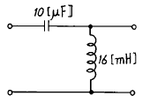
- 고역필터이며, K=40[Ω]이다.
- 저역필터이며, K=40[Ω]이다.
- 고역필터이며, K=16[Ω]이다.
- 저역필터이며, K=16[Ω]이다.
(정답률: 62%)
30. 다음은 리액턴스 곡선에 관한 사항이다. 옳지 않은 것은?
- 곡선의 기울기는 어디서나 (+)이다.
- 주파수가 증가함에 따라 극점과 영점이 교대로 나타난다.
- ω =0, ω =∞ 에서의 영점과 극점이 존재한다.
- 내부영점과 내부극점의 총수는 회로 내의 리액턴스 소자의 총 수 보다 하나 더 많다.
(정답률: 50%)
31. e=100√2sin (100π t- π/3)[V]인 정현파 교류 전압의 주파수 [Hz]는?
- 314
- 100
- 60
- 50
(정답률: 45%)
32. 다음 그림에서 단자 a, b에 나타나는 전압 Vab는 약 몇 [V]인가?
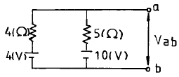
- 4.5
- 5.6
- 6.7
- 7.0
(정답률: 37%)
33. 단절연(Graded insulation)된 절연케이블이 있다. 심선과 외피를 절연시키는 유전체의 유전률이 각각 ε1, ε2, ε3 일 때 절연효과를 높히기 위하여 내측에서부터 채워야 되는 순서로 옳은 것은? (단, ε1＞ε2＞ε3 이다.)
- ε1, ε3, ε2
- ε2, ε1, ε3
- ε3, ε2, ε1
- ε1, ε2, ε3
(정답률: 58%)
34. 전류Ｉ[A]에 대한 P점의 자계 H[A/m]의 방향이 옳게 표시 된 것은? (단, 은 지면을 나오는 방향, 은 지면을 들어가는 방향표시이다.)
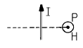
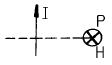
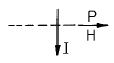
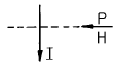
(정답률: 87%)
35. 반지름 a인 액체상태의 원통상 도선 내부에 균일하게 전류가 흐를 때 도체내부에 자장이 생겨 로렌츠의 힘으로 전류가 원통 중심방향으로 수축하려는 효과는?
- 펠티에 효과
- 톰슨효과
- 핀치효과
- 제에벡효과
(정답률: 59%)
36. 전하 Q1, Q2 간의 작용력이 F1일 때 이 근처에 전하 Q3을 놓을 경우 Q1과 Q2 사이의 전기력을 F2라 하면?
- F1 = F2
- F1＜ F2
- F1 ＞ F2
- Q3의 크기에 따라 다르다.
(정답률: 63%)
37. a, b, c 인 도체 3개에서 도체 a 를 도체 b 로 정전차폐 하였을 때의 조건으로 옳은 것은?
- c 의 전하는 a 의 전위와 관계가 있다.
- a, b 간의 유도계수는 없다.
- a, c 간의 유도계수는 0 이다.
- a 의 전하는 c 의 전위와 관계가 있다.
(정답률: 62%)
38. 저항 10[Ω], 인덕턴스 50[H]의 R-L 직렬회로에 100[V]의 전압을 인가 하였을 때 시정수 τ는?
- 0.2
- 0.8
- 1.25
- 5
(정답률: 53%)
39. sinω t의 라플라스 변환은?
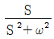
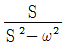
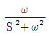
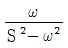
(정답률: 66%)
40. 그림과 같은 유도결합회로에서 자기인덕턴스는 L1=3[mH], L2=2[mH]이고, 상호인덕턴스는 M=1[mH]이다. 단자 ab간의 합성 인덕턴스 Lab의 값은 몇 [mH]인가?
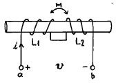
- 2
- 3
- 4
- 6
(정답률: 49%)
3과목: 전자계산기일반
41. 어떤 시스템에서 데이터의 전송 속도가 200bps라고 할 때 이 시스템에 10초간 전송하는 데이터는 모두 몇 bit인가?
- 2
- 20
- 200
- 2000
(정답률: 88%)
42. 어떤 명령이 실행되기 위해서 가장 먼저 이루어지는 마이크로 오퍼레이션은?
- MBR← PC
- PC← PC+1
- IR← MBR
- MAR← PC
(정답률: 77%)
43. 기억장치로 부터 명령이나 데이터를 읽을 때 제일 먼저 하는 동작은?
- 명령어 해독
- 명령어 실행
- 어드레스 증가
- 어드레스 지정
(정답률: 52%)
44. 자료가 기억된 장소에 직접 사상(Mapping) 시킬 수 있는 주소는?
- 간접 주소
- 직접 주소
- 상대 주소
- 계산에 의한 주소
(정답률: 87%)
45. 연산장치에서 피가수를 기억하고 연산 후에는 결과를 일시적으로 기억하는 레지스터를 무엇이라 하는가?
- accumulator
- storage register
- index register
- instruction counter
(정답률: 79%)
46. 어떤 컴퓨터의 명령어에서 OP 코드가 8비트라면 명령어의 최대 가지 수는 얼마나 되겠는가?
- 257
- 256
- 255
- 254
(정답률: 82%)
47. 중앙처리장치의 하드웨어 요소를 기능별로 나누었을 때 해당되지 않는 것은?
- 기억 기능
- 입력 기능
- 전달 기능
- 제어 기능
(정답률: 43%)
48. 10진수 8 일 때 3초과 부호(excess-3 code)는?
- 1010
- 1011
- 1100
- 1111
(정답률: 79%)
49. 인터럽트(interrupt)에 관한 설명 중 옳지 않은 것은?
- 인터럽트의 우선순위를 부여할 수 있다.
- 소프트웨어와 하드웨어 인터럽트가 있다.
- 인터럽트에 대한 서비스 중에는 다른 인터럽트가 허용될 수 없다.
- 분기번지를 선택하는 방법에 따라 벡터(vector)형과 비벡터(nonvector)형이 있다.
(정답률: 68%)
50. 운영체제에 대한 설명으로 가장 옳은 것은?
- 운영체제는 사용자 스스로 제공한다.
- 프로그래머가 작성한 언어를 기계어로 번역하는 프로그램이다.
- 어떤 용도를 위해 범용 프로그램과 사용자가 직접 작성한 프로그램을 말한다.
- 컴퓨터 시스템의 효율성을 높이고, 사용자에게 편리를 제공하기 위한 소프트웨어 체제를 말한다.
(정답률: 75%)
51. 패리티 비트(parity bit)에 대한 설명으로 옳지 않은 것은?
- 한 개의 비트만으로 간단하게 구현할 수 있다.
- 2 비트 이상의 오류를 검출할 수 있다.
- 오류를 교정할 수 없다.
- 데이터에 패리티 비트를 추가해서 사용한다.
(정답률: 56%)
52. 전가산기(full adder)의 구조를 올바르게 설명한 것은?
- 1개의 반가산기와 1개의 OR 회로로 구성
- 1개의 반가산기와 1개의 AND 회로로 구성
- 2개의 반가산기와 1개의 OR 회로로 구성
- 2개의 반가산기와 1개의 AND 회로로 구성
(정답률: 58%)
53. 마이크로프로세서의 기본 구성 요소가 아닌 것은?
- 연산부
- 제어부
- 입 ㆍ 출력부
- 레지스터부
(정답률: 62%)
54. 먼저 들어간 데이터가 나중에 나오고 나중에 들어간 데이터가 먼저 나오는 자료구조로서 LIFO(Last-In First-out)의 선형 리스트는?
- 데크
- 계층 메모리
- 스택
- 큐
(정답률: 74%)
55. 코딩을 하면 바로 프로그램이 작성될 수 있을 정도로 가장 세밀하게 그려진 순서도는?
- 개략 순서도
- 상세 순서도
- 시스템 순서도
- 처리 순서도
(정답률: 74%)
56. 고정 소수점 표현 방식이 아닌 것은?
- 부호와 절대치
- 부호와 1의 보수
- 부호와 2의 보수
- 부호와 지수
(정답률: 79%)
57. 컴퓨터 성능 표시의 중요 요소인 기억장치의 bandwidth는 대부분 무엇을 이용하는 것인가?
- 자료와 메모리
- 자료와 명령어
- 메모리와 명령어
- 메모리와 레지스터
(정답률: 22%)
58. CPU 내에서 읽혀진 명령에 의해 필요한 신호를 만들어 결과를 얻을 때까지의 단계를 무엇이라고 하는가?
- 실행 사이클
- 인덱스 사이클
- 인터럽트 사이클
- 인출 사이클
(정답률: 47%)
59. 여러개의 연산장치를 가지고 있으며 여러개의 프로그램을 동시에 처리하는 방법을 말하는 용어는?
- Multi processing
- Multi programming
- Batch processing
- Real time processing
(정답률: 64%)
60. 전원 공급이 계속되더라도 주기적으로 충전시키지 않으면 기억된 내용이 모두 소멸하는 기억장치는?
- ROM
- RAM
- D-RAM
- S-RAM
(정답률: 69%)
4과목: 전자계측
61. 고주파 전압 측정용 계기로 검파 작용을 이용한 계기는?
- 가동철편형 전압계
- 정전형 전압계
- 가동코일형 전압계
- P형 진공관 전압계
(정답률: 40%)
62. 단상 교류 전력을 측정하기 위한 방법이 아닌 것은?
- 3전력계법
- 3전류계법
- 3전압계법
- 단상전력계법
(정답률: 76%)
63. 다음은 증폭기의 잡음 지수에 대하여 설명한 것이다. 옳지 못한 것은?
- 잡음지수= 입력신호의 S/N/출력신호의 S/N
- 증폭기의 잡음지수를 좋게 하려면 온도를 낮출 수록좋다.
- 출력 증폭단의 잡음지수는 증폭기 전체의 잡음지수에 별로 관련이 없다.
- 증폭기의 잡음지수를 좋게하려면 대역폭을 넓힐 수록좋다.
(정답률: 36%)
64. 오실로스코프(oscilloscope)는 높은 주파수 또는 펄스(pulse)와 같은 충격성 전압이나 전류를 관측할 수 있는 계기로서 사용상 주의점에 해당되지 않는 것은?
- 사용하지 않을 때는 휘도를 낮추던가 전원을 끈다.
- 접지 단자는 반드시 접지
- 관측 파형은 항상 중앙에 오게 한다.
- 관측하려는 신호의 주파수가 낮거나 직류의 경우는 직접 단자를 사용한다.
(정답률: 69%)
65. 증폭기의 왜율 측정에 해당되지 않는 것은?
- 감쇄기 법
- 공진 Bridge 법
- 필터 법
- 왜율계
(정답률: 72%)
66. R-L-C 병렬 공진 회로에서 공진 때의 임피던스는?
- 1/LCR
- 1/CR
- L/CR
- R/LC
(정답률: 60%)
67. 교류 100Vrms 전압을 오실로스코프로 측정했을 때 이 교류의 peak to peak 전압은 약 몇 [V]인가?
- 100
- 141
- 200
- 282
(정답률: 70%)
68. 브라운관 오실로스코프에 다음과 같은 그림을 얻었다. 무엇을 측정한 것인가?
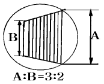
- 20%의 AM 변조도
- 20%의 FM 변조도
- 40%의 AM 변조도
- 40%의 FM 변조도
(정답률: 77%)
69. 트리거 스위프식 오실로스코프의 회로구성에서 빈칸 안에 알맞은 것은?
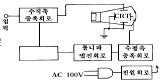
- 적분회로
- 차동증폭회로
- 트리거회로
- 입력 절환회로
(정답률: 73%)
70. 헤테로다인 주파수계에서 Single beat 법보다 Double beat 법이 좋은 이유는?
- 구조가 간단하다.
- 취급이 용이하다.
- 오차가 적다.
- 측정 범위가 넓다.
(정답률: 73%)
71. 계기정수 2400[Rev/kWh]의 적산전력계가 30[초]에 15회전 했을 때의 전력[W]은?
- 500
- 750
- 1000
- 1250
(정답률: 65%)
72. 가동 코일 측정기로 측정을 완료하였을 때 메터의 지침을 0의 위치로 되돌리는 토크는?
- 제어 토크
- 구동 토크
- 제동 토크
- 진동 토크
(정답률: 45%)
73. 그림의 가동코일형 전류계 내부에 있는 망가닌 저항 R1(가동코일과 직렬)의 주 역할은?
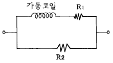
- 온도 보상용이다.
- 분류기 저항이다.
- 배율기 저항이다.
- 영점 조정 저항이다.
(정답률: 63%)
74. 격자 제어 방전관(thyratron)의 주된 용도는?
- 대전압 개폐 스위치
- 소전압 개폐 스위치
- 대전류 기동을 제어하는 스위치
- 소전류 기동을 제어하는 스위치
(정답률: 49%)
75. 오실로스코프로 측정 불가능한 것은?
- 전압
- 변조도
- 주파수
- 코일의 Q
(정답률: 93%)
76. VU계(meter)의 단위는?
- VU
- dB
- V-m
- dBm
(정답률: 73%)
77. 펄스의 형태가 아닌 것은?
- 주기적 펄스
- 단일 펄스
- 확률적 펄스
- 통계적 펄스
(정답률: 62%)
78. 가동 철편형 계기의 오차 원인이 아닌 것은?
- 주파수
- 공진 오차
- 온도
- 외부자계
(정답률: 45%)
79. 오실로스코프(Oscilloscope)로 파형 관측 시 톱니파를 피측정 전압에 동기시키는 이유는?
- 파형을 수직 이동시키기 위하여
- 파형을 확대시키기 위하여
- 휘도를 밝게 하기 위하여
- 파형을 정지시키기 위하여
(정답률: 64%)
80. FM 수신기의 감도란?
- 신호가 없을 때의 잡음을 10[㏈] 저하시키기 위한 입력 전압 레벨
- 신호가 없을 때의 잡음을 10[㏈] 증가시키기 위한 입력 전압 레벨
- 신호가 없을 때의 잡음을 20[㏈] 저하시키기 위한 입력 전압 레벨
- 신호가 없을 때의 잡음을 20[㏈] 증가시키기 위한 입력 전압 레벨
(정답률: 53%)